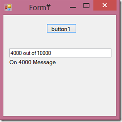

async Task MyMethodAsync(int sleepTime, IProgress<MyTaskProgressReport> progress)
{
int totalAmount = 10000;
for (int i = 0; i <= totalAmount;)
{
await Task.Delay(sleepTime);
progress.Report(new MyTaskProgressReport { CurrentProgressAmount = i, TotalProgressAmount = totalAmount, CurrentProgressMessage = string.Format("On {0} Message", i) });
i = i + sleepTime;
}
}
{
//current progress
public int CurrentProgressAmount { get; set; }
//total progress
public int TotalProgressAmount { get; set; }
//some message to pass to the UI of current progress
public string CurrentProgressMessage { get; set; }
}
To simulate a time taking task, inside my async method, I have a For loop and inside it I have a Task Delay. In every iteration, progress is reported to the caller. Now let’
see how UI captures this.
{
label1.Text = progress.CurrentProgressMessage;
textBox1.Text = string.Format("{0} out of {1}", progress.CurrentProgressAmount, progress.TotalProgressAmount);
}
Now I am going to call my async method. I have created a Progress<T> instance and invoked the async method, which is triggered by a button click.
{
var progressIndicator = new Progress<MyTaskProgressReport>(ReportProgress);
await MyMethodAsync(1000, progressIndicator);
}
Here is the output,
|  |
| Result |
{kind=link}